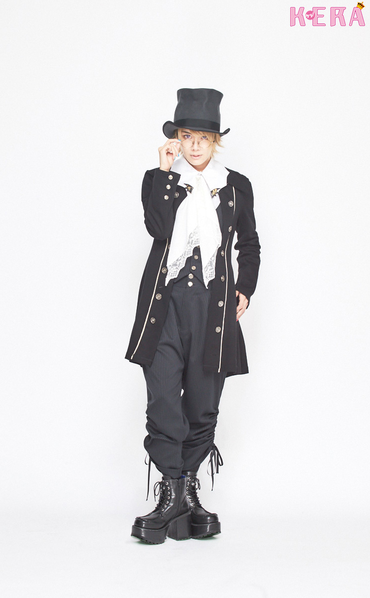
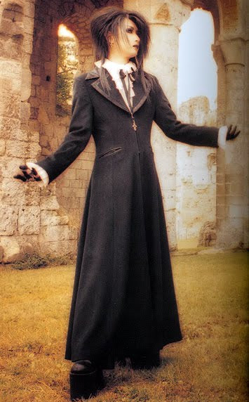

egl fashion is short for "elegant gothic lolita," a certain style of 90's-2010s street fashion defined by hyper femininity and a "bell" torso silhouette designed for adults. this hyper feminine focus will utilize laces, ruffles, and most importantly a "cute" elegance. it's a luxury fashion, with origins in designer labels from vivienne westwood and christopher nemeth as well as independent designers like baby the stars shine bright, metamorphose temps de fille, and angelic pretty.
aristocrat, gothic lolita, and ouji are not counterparts of each other. for example, you wouldn't say "ouji is the male version of lolita.
they have overlapping elements and communities, but are styled differently.
ouji is a style that utilizes androgynous pieces to achieve "playful luxury". while its name branches from the term 王子 or "prince", you aren't literally a prince and some people might compare an ouji more to a pirate or some gothic-inspired archetype. while "more masculine" than lolita, it's still a feminine style and women's-focused fashion that anyone can wear.
aristocrat is a broadly-encompassing style of antique goth fashion with a japanese solution. it's particularly known for its equally frilly, high-quality construction and textures but tunes into the mature aspects of elegance using blocky and long silhouettes. 90's japanese styling is important to what makes j-aristocrat's flair work, because it does not look the same under a western style context of antique gothic.
identifying ouji from aristo can be difficult because of their dubiety of silhouettes, but with the right eye for silhouettes and fashion...


can you tell which is ouji and which is aristo?
egl is not victorian or rococo fashion, or trying to look like either of the two. to really understand the stylistic idiosyncracies of lolita, ouji, and aristocrat, please study the gothic lolita bible scans.